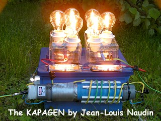

KAPAGEN, the Tariel Kapanadze's
generator
by Jean-Louis Naudin
created on may 28, 2010 - JLN
Labs - Last update July 5, 2010
Toutes les
informations et schémas sont publiés gratuitement ( freeware )
et sont destinés à un usage personnel et non commercial
All informations and
diagrams are published freely (freeware) and are intended for a private use and a non commercial
use.
The purpose of these series of experiments is to try to understand the working principle of the Tariel Kapanadze generator presented in his demo video and also to share in realtime the results of my findings through this web page.
My current Kapanadze generator v3.2 is only an attempt of replication of the Tariel's original device based on the Nikola Tesla fuelless generator.
WARNING !!!  WARNING
!!!
WARNING
!!!
Due to the presence of High Voltage and the High Power output of the Kapagen, users of this document should be very carefull and experienced in High-Voltage electronics to try anything out ! If you do it, the risk of any result is just yours. I take no responsibility of anything that might happen.
Testing such a device needs a lot of caution and the use of safety procedures, the experimenter must be very skilled in the use of High Voltage at High Power...
| PROJECT LOG BOOK |
  The Worldwide Kapagen
experiment replications The Worldwide Kapagen
experiment replicationsLast published replication July 2nd, 2010 |
| June 30, 2010 - Power OUTPUT measured on the Kapagen v3.3 |
| June 22, 2010 - Very interesting test with the Kapagen v3.3 |
| June 7, 2010 - 2100 Watts of light at the output |
| June 5, 2010 - 1200 Watts of light at the output |
| June 1st, 2010 - More power with the version 3.2: up to 420 Watts the output |
| May 31, 2010 - First successful test of the KAPAGEN v3 with a 150 W halogen lamp |
| May 28, 2010 - begining of the Kapagen project |
IMHO, I think that the working principle of the Tariel Kapanadze generator is to suck the free electrons from the Earth. The Earth is a big capacitor which contains free electric charges. If it is possible to create or to find a potential imbalance between two points in the ground, it seems possible to suck additional electrons from the ground and thus to create an increase of the current flow through a wire connected between these two points. Early in his researches in Colorado Springs, Nikola Tesla wanted to collect free energy from the Earth capacitor between the ground and the ionosphere by the use of a parametric resonance with the TMT project (read the Colorado Springs notes from 1899). Later, Tesla has also found that it is possible to do the same process with only the use of the ground by using the natural imbalance of the ground potential produced by the telluric currents flow underground and Tesla has found that this can be done by the use of an asymmetric displacement of current...
"Minimal work is done in the system due to absence of translational movement in the displacement current. As small heat losses occurs, oscillations are maintained by the surplus charge stored in the coil. Very low energy expenditure allows power delivery to a load over an extended time period without an external fuel supply. After an initial input of energy from an outside source, Tesla's new electrical generator would operate as a fuelless device." from "The Second Law Thermodynamics and Tesla's Fuelless Generator" by Oliver Nichelson
Today, I am not able to say if my Kapagen v3.2 is fully in line with this principle above, because this is only the beginning of my research project, this is my main purpose and I explore this path as long as I continue to found something interesting, stay tuned...
To help me to find the imbalance of the ground potential on the surface of the Earth induced by underground telluric currents, I have built and I use a kind of surface tellurmeter (a low impedance electrometer), see a photo and the diagram of my device...

From "The Second Law of Thermodynamics
and Tesla's Fuelless Generator" by Oliver Nichelson


All the halogen lamps are protected by
surge arrestors EPCOS 230V, this avoids to burn their tungsten
filaments.


I have used halogen light bulbs with a
strong tungsten filament.
The pulsed power is very strong and the use of halogen lamps is
better than common incandescent lamps.

To work properly, the Kapagen requires
two earth ground connections 10 meters spaced.
The power tapped depends on the weather conditions and the
underground current flow...

The spark gap of the Kapagen (0.9 mm to 1.2 mm gap)

In the Kapagen v3.3, the spark gap has been improved and finely tuned.

The spark is very quiet and weak compared to the previous version
with the tungsten rods.

A plasma cloud is created between the gap, there is no audible
sound of sparks discharge.


Power OUTPUT/INPUT measured on the Kapagen
v3.3

The latest power
input measurements is far
more accurate than the previous, more tests must be soon
conducted...
The purpose of the Kapagen is to suck the free electrons from the Earth. The Earth is a big capacitor which contains free electric charges. If it is possible to create or to find a potential imbalance between two points in the ground, it seems possible to suck additional electrons from the ground and thus to create an increase of the current flow through a wire connected between these two points.
The Kapagen project is still under researches because its principle really worth to be deeply explored......
Interesting documents :
MIT Lecture videos :
Patents :
|
 Email : JNaudin509@aol.com
Email : JNaudin509@aol.com
return to Tesla experiments page